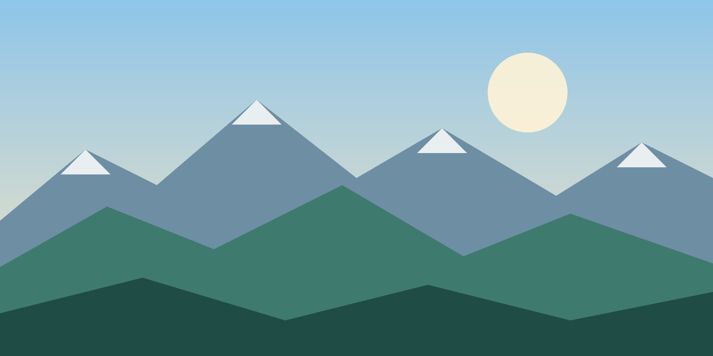
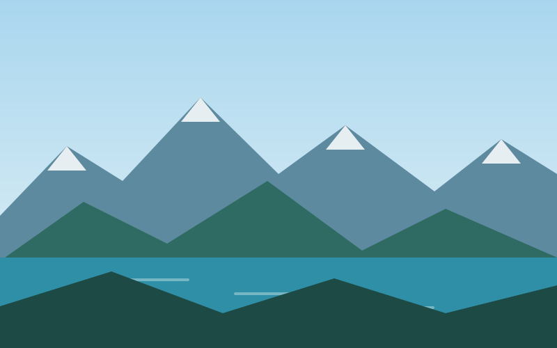
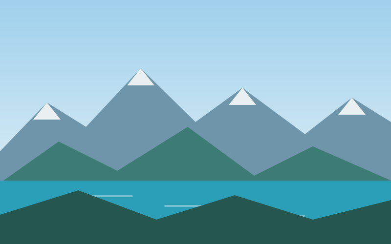
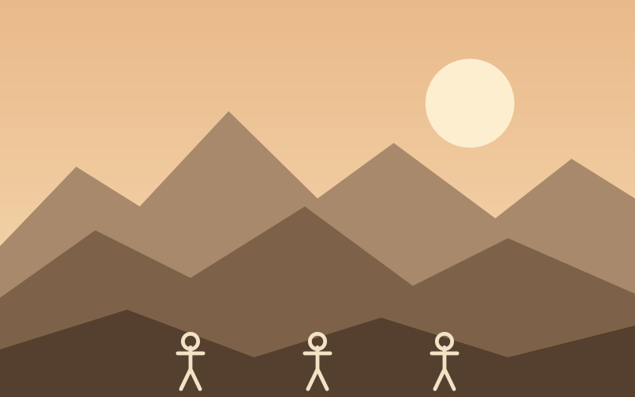
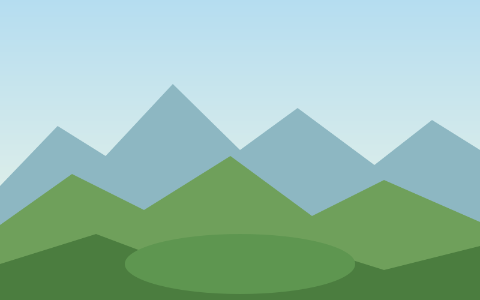

Charyn Canyon
Red sandstone canyon, Valley of Castles

Hiking trails, historic sites and route maps in one guide.
Choose a TourNatural and historical objects, rated by local experts.
Red sandstone canyon, Valley of Castles

Three alpine lakes deep in the Tian Shan

Turquoise lake high above the city

Bronze Age petroglyphs, UNESCO site

Saka royal burial mound, Golden Man
A dune that hums in dry, windy weather
Tell us how long you travel and with whom, and we will email you a route map in PDF format together with an expedition checklist.